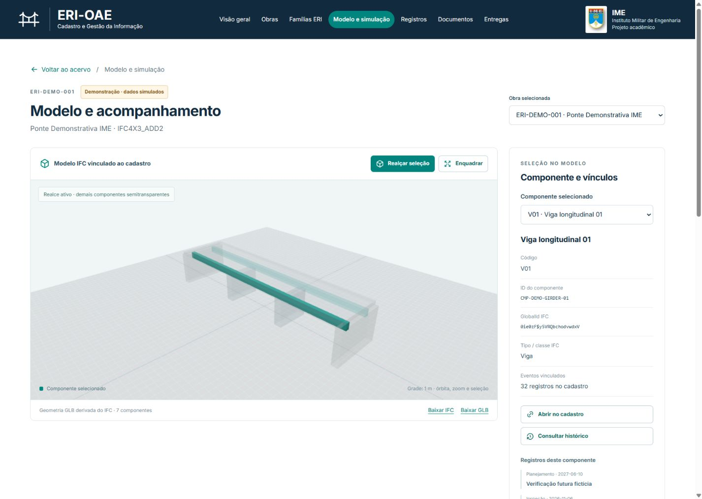

Instituto Militar de EngenhariaSistema de Transporte Rodoviário
Doutorado em Engenharia de Transportes
ERI-OAE
Especificação de Requisitos de Informação para Obras de Arte Especiais

IfcBeam
Viga V01
IFC 4.3
modelo.ifc
JSON dossie.json
24 leituras simuladas